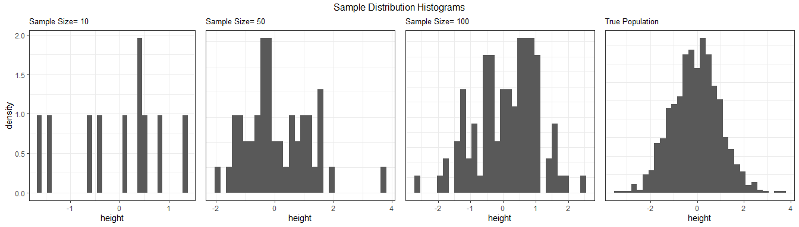
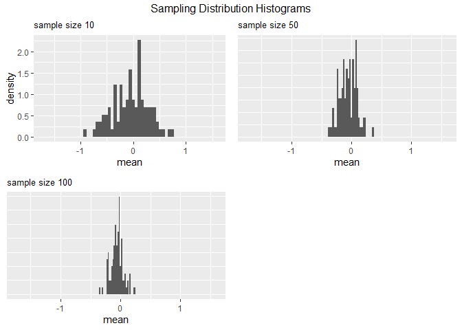

samplingsimulatorr is an R package intended to assist those teaching or learning basic statistical inference.
Overview
This package allows users to generate virtual populations which can be sampled from in order to compare and contrast sample vs sampling distributions for different sample sizes. The package also allows users to sample from the generated virtual population (or any other population), plot the distributions, and view summaries for the parameters of interest.
Installation
You can install the development version of samplingsimulatorr from GitHub with:
# install.packages("devtools")
devtools::install_github("UBC-MDS/samplingsimulatorr")Function Descriptions
-
generate_virtual_popcreates a virtual population.-
Inputs : distribution function (i.e.
rnorm,rexp, etc), the parameters required by the distribution function, and the size of the population. - Outputs: the virtual population as a tibble
-
Inputs : distribution function (i.e.
-
draw_samplesgenerates samples of different sizes- Inputs : population to sample from, the sample size, and the number of samples
- Outputs: returns a tibble with the sample number in one column and value in a second column.
-
plot_sample_histcreates sample distributions for different sample sizes.- Inputs : population to sample from, the samples to plot, and a vector of the sample sizes
- Outputs: returns a grid of sample distribution plots
-
plot_sampling_distcreates sampling distributions for different sample sizes.-
Inputs : samples created by
draw_samplesfunction, variable of interest, a vector of the sample sizes, and the number of replication for each sample size - Outputs: returns a list of sampling distribution plots
-
Inputs : samples created by
-
stat_summary: returns a summary of the statistical parameters of interest- Inputs: population, samples, parameter(s) of interest
- Outputs: summary tibble
How do these fit into the R ecosystem?
To the best of our knowledge, there is currently no existing R package with the specific functionality to create virtual populations and make the specific sample and sampling distributions described above. We do make use of many existing R packages and expand on them to make very specific functions. These include: - built-in r distribution functions such as rnorm to sample from distributions - rep_sample_n to generate random samples - ggplot2 to create plots Python pandas already includes some summary statistics functions such as .describe(), however our package will be more customizable. Our summary will only include the statistical parameters of interest and will provide a comparison between the sample, sampling, and true population parameters.
Dependencies
- dplyr >= 0.8.5
- rlang >= 0.4.5
- infer >= 0.5.1
- magrittr >= 1.5.0
- gridExtra >= 2.3.0
- ggplot2 >= 3.3.0
Usage
generate_virtual_pop
library(samplingsimulatorr)
generate_virtual_pop(N, var_name, dist, ... )Arguments:
-
N: The number of samples -
var_name: The variable name that we need to create -
dist: The distribution that we are generating samples from -
...: The arguments required for the distribution function
Example:
pop <- generate_virtual_pop(100, "height", rnorm, 0, 1)
draw_samples
library(samplingsimulatorr)
draw_samples(pop, reps, sample_size)Arguments:
-
popthe virtual population as a tibble -
repsthe number of replication for each sample size as an integer value -
sample_sizethe sample size for each one of the samples as an array
Example:
samples <- draw_samples(pop, 3, c(1, 10))
plot_sample_hist
library(samplingsimulatorr)
plot_sample_hist(pop, samples, var_name, sample_size)Arguments:
-
popthe virtual population as a tibble -
samplesthe samples as a tibble -
var_namethe name of the column for the variable that is being generated -
sample_sizea vector of the sample sizes (each sample size needs to be in thesamplesdf input)
Example:
plot_sampling_hist
library(samplingsimulatorr)
plot_sampling_hist(samples, var_name, sample_size)Arguments:
-
samplesthe samples as a tibble -
var_namethe name of the column for the variable that is being generated -
sample_sizea vector of the sample sizes (each sample size needs to be in thesamplesdf input)
Example:
stat_summary
library(samplingsimulatorr)
stat_summary(pop, samples, paramater)Arguments
-
populationthe virtual population -
samplesthe drawn samples -
parameterthe parameter(s) of interest
Example
Example Usage Scenario
library(samplingsimulatorr)
# generate population
pop <- generate_virtual_pop(1000, "height", rnorm, 0, 1)
head(pop)
#> # A tibble: 6 x 1
#> height
#> <dbl>
#> 1 1.07
#> 2 0.707
#> 3 0.853
#> 4 -1.63
#> 5 -0.512
#> 6 -0.833# create samples
samples <- draw_samples(pop, 100, c(1, 10, 50, 100))
head(samples)
#> # A tibble: 6 x 4
#> # Groups: replicate [6]
#> replicate height size rep_size
#> <int> <dbl> <dbl> <dbl>
#> 1 1 0.804 1 100
#> 2 2 -0.883 1 100
#> 3 3 -1.69 1 100
#> 4 4 0.000492 1 100
#> 5 5 1.17 1 100
#> 6 6 -0.738 1 100# plot sample histogram
plot_sample_hist(pop, samples, height, c(10, 50, 100))
#> `stat_bin()` using `bins = 30`. Pick better value with `binwidth`.
#> `stat_bin()` using `bins = 30`. Pick better value with `binwidth`.
#> `stat_bin()` using `bins = 30`. Pick better value with `binwidth`.
#> `stat_bin()` using `bins = 30`. Pick better value with `binwidth`.
plot_sampling_hist(samples, height, c(10, 50, 100))
#> `stat_bin()` using `bins = 30`. Pick better value with `binwidth`.
#> `stat_bin()` using `bins = 30`. Pick better value with `binwidth`.
#> `stat_bin()` using `bins = 30`. Pick better value with `binwidth`.
Documentation
The official documentation is hosted on pkgdown. You can also refer to our html vignette.